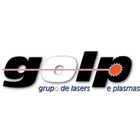

Electrical and Computer Engineer

About Me
I'm a 21-year-old Electrical and Computer Engineer from Instituto Superior Técnico, where I completed my Bachelor's degree.
Driven by curiosity and a passion for continuous learning, I'm currently developing my skills through two internships, one in semiconductor testing and validation at SiliconGate, and another in quantum simulation research at GOLP – IPFN.
I'm deeply interested in fields that bridge hardware, physics, and computation, such as Quantum Engineering, Semiconductors, and Advanced Electronic Systems. I enjoy tackling complex problems, learning from multidisciplinary teams, and contributing to meaningful projects that push technology forward.
Above all, I'm motivated by the idea of turning theoretical knowledge into practical solutions and of growing every day as an engineer and as a person.
Education
Experience
Test Engineer Intern - SiliconGate
Aug 2025 - Present
Lisbon, Portugal
At SiliconGate, I work in the Test & Laboratory team, focusing on the validation and characterization of semiconductor IP devices for power management. My tasks include developing and automating test setups, performing hardware measurements, soldering and assembling circuits, and writing code to control and analyze test systems. This experience has strengthened my skills in electronics, programming, and practical lab work.
 Research Intern - GOLP (Group for Lasers and Plasmas) - IPFN
Sep 2025 - Present
Lisbon, Portugal
At GOLP, I'm conducting research on quantum simulation of Maxwell's equations, exploring the intersection between quantum physics and electromagnetism. Throughout this project, I've deepened my understanding of Hamiltonian mechanics, quantum systems, and numerical modeling, gaining valuable insight into how fundamental physics can be simulated and experimentally studied.
 Instituto de Telecomunicações
Instituto de Telecomunicações
Feb 2025 - Present
Lisbon, Portugal
Assisting in the development of an Atmospheric Chamber for a Quantum Key Distribution (QKD) experiment with Pedro Mendes, enabling the study of turbulence effects on quantum and classical signals. I also participate in weekly meetings of the Quantum and Photonics Department, tracking the progress of 8 ongoing projects. I take notes on the developments of each project and learn about the practical applications of quantum and photonics technologies in real-world projects and theses.
 IST Student Association (AEIST)
IST Student Association (AEIST)
Oct 2024 - Present
Lisbon, Portugal
Corporate Relations Collaborator: Developed and fostered relationships with external organizations, successfully securing funding and sponsorships to support AEIST activities.
Skills gained: Partnership Development, Communication, Project Management, Sales Negotiation.
Projects & Achievements
Anti-Drone Detection System
Dec 2024 - Present
Lisbon, Portugal
I'm leading a team developing an Anti-Drone Detection System for Communication Jamming as part of my bachelor's final year project at Instituto Superior Técnico. Our system leverages machine learning to accurately identify and distinguish drones from other flying objects, enhancing security in sensitive areas. This project is being developed in collaboration with the Portuguese Air Force, Thales, and Mauser, combining expertise and resources to achieve impactful results. Our goal is to provide security forces with a reliable, efficient tool that strengthens their ability to detect and respond to potential drone threats.
Skills & Languages
Technical Skills
- Programming: C, C++, Python, Assembly, Java
- LaTeX (Overleaf)
- Excel
- Matlab
- Electrical Engineering: Propagation and Radiation of Electromagnetic Waves, Telecommunications, Circuit Analysis, Computer Architecture, Algorithms and Data Structures, Differential and Integral Calculus, Linear Algebra
Personal Skills
- Leadership
- Communication
- Conflict Resolution
- Teamwork
- Proactivity
- Analytical Thinking
- Adaptability and Flexibility
- Problem Solving
- Learning Agility
Languages
- Portuguese: Native
- English: Proficient (C1)
- Spanish: Basic Fluency
Volunteering
Tutoring
May 2024 - Present
Cascais, Portugal
I have been actively involved in a volunteer tutoring project, where I provide educational support to around 15 children, ranging from preschool to secondary school. This experience has challenged me to think in different ways to effectively explain fundamental concepts tailored to each child's understanding. Throughout this journey, I discovered my passion for teaching, which played a significant role in my decision to take a gap year, not only to explore new experiences but also to dedicate time to sharing knowledge and helping others grow academically.
Cascais Jovem
2021 - Present
Cascais, Portugal
I have participated as a volunteer in several initiatives organized by Cascais Jovem, contributing to the smooth running of various events and community programs. My involvement has included roles in the Occupational Safety and Health Conference, where I provided logistical support and assisted with event organization; the Children's Festival, engaging with children and families to ensure a positive experience; the Safe Beaches Initiative, supporting efforts to promote beach safety and environmental awareness; and the Portuguese Elections, assisting in the organization and coordination of electoral processes, among others. Through these initiatives, I have developed strong teamwork, communication, and problem-solving skills, while gaining valuable experience in event support and community engagement.
Hobbies

Guitarist
Own Band - 4 Concerts

Traveler
Visited 16 countries on 4 different continents

Physical Exercise
Climbing, Gym, Padel, Sailing